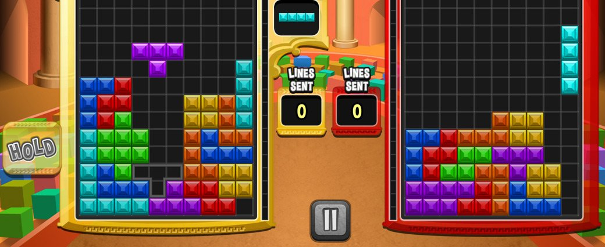

The most addicting things about tetris is learning how to pull of sick tricks and spins. In Tetris, spins are when you rotate a block into tight spaces to make things fit perfectly, and it’s a skill that can make a huge difference as the game speeds up. T-Spins, L-Spins, and J-Spins are moves that give players a way to squeeze pieces into places that seem almost impossible. T-Spins are the best-known spin move and a favorite among experienced players. They involve twisting the "T" shaped piece into a gap just right to clear lines, which scores extra points. It’s all about timing and precision, and a well-executed T-Spin can clear out tricky sections of the grid while giving you a nice score boost. Then there are L-Spins and J-Spins, where you rotate the “L” or “J” shaped pieces to tuck them into tight corners or small spaces you’d think they wouldn’t fit into. These spins don’t score the same bonus points as T-Spins, but they’re still super useful for clearing out spaces and making your stack cleaner. These spins are part of what makes Tetris so addictive. They’re satisfying little tricks that give you control over what might otherwise be a chaotic pile of blocks, and mastering them takes the game to a whole new level.
List of COol Spins!:
- T-Spin
- J-Spin
- L-Spin
- O-Spin
- L-Spin